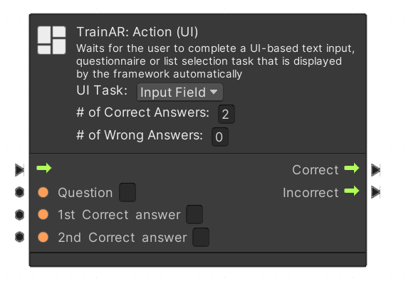

TrainAR UI Action
TrainAR: Action nodes (UI) define which are the correct steps to take for the user in the AR-Training. UI Action notes require input of the user on the user interface. UI Action nodes include action nodes in the form of various Questionnaire-type UI-Elements. In the node, you may change via the dropdown menu UI-Task: between Questionnaire, Input Field or list selection actions.
UI Task: Questionnaire
If the UI Task is set to Questionnaire, the user will be shown a question and a set of predetermined answers. When the user chooses one of these answers, the user is also shown feedback. The question itself as well as the number of corresponding correct and wrong answers and their feedback have to be specified in the node. If the user inputs an answer, the stateflow resumes according to the Correct or Incorrect outputs of the node.
UI Task: Input Field
With the UI Task set to Input Field, the user has to type in his answer to a question via an on-screen keyboard. The questions as well as the correct answers have to be specified in the node. If the user inputs an answer, the stateflow resumes according to the Correct or Incorrect outputs of the node.

UI Task: List Selection
With the UI Task set to List Selection the user is presented with a list of possible anwers on UI buttons, which can be defined, as well as their respective feedback, in the node. If the user chooses an answer the stateflow proceeds according to the Correct or Incorrect output of the node.